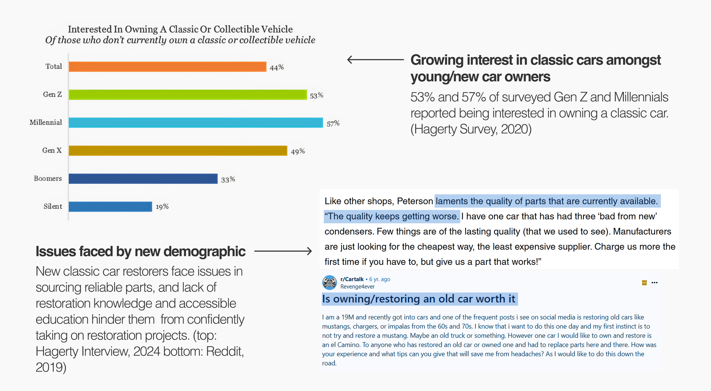
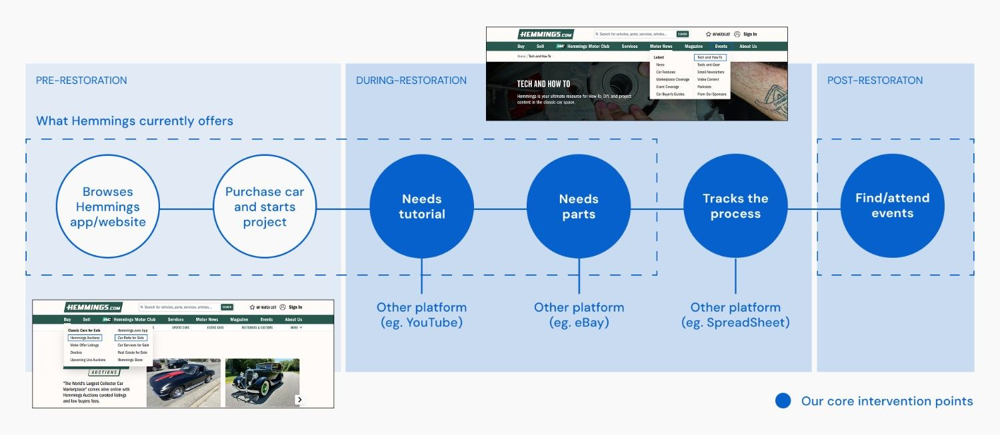
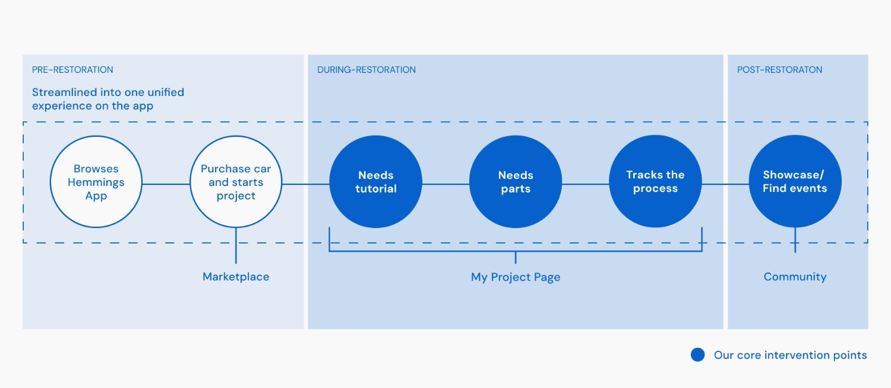
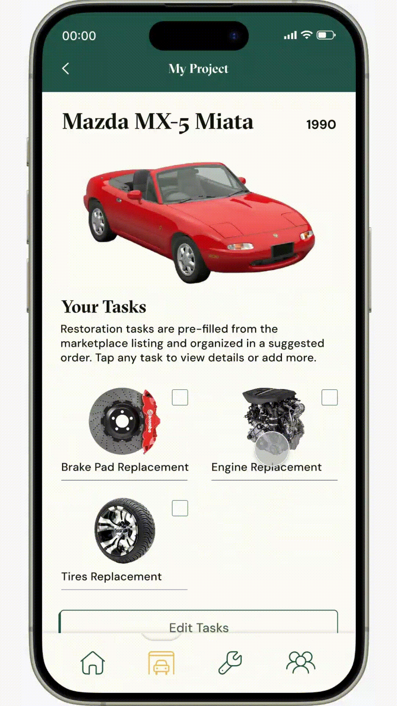

Hemmings Mobile App Redesign
Redesigning Hemming's app to streamline the classic car restoration process for beginners. — This project will be updated!
Project Context
This was an academic project, for an upper level course User Experience Design (IAT 438) at Simon Fraser University. The objective was to identify unmet client needs and design a solution to create value for both customers and the business.
Deliverables
High-fidelity prototype of the proposed solution, a user-scenario video, and a client presentation..
My Contribution
- Conducted key secondary user research.
- Made key visual design decisions and rationale.
- Assisted in developing final visual design and prototype
Duration
5 Weeks (June-August 2025)
Tools
Figma, Google Forms
Role
Visual Design
Prototyping
Content Strategy
Team
Areeba Ali, Sarrah Anuva, Yasamine Ketabchi, Yumi Kawagoe, Hinata Nozawa
Introduction

Video Clip from: https://www.hemmings.com/driven-by-drivers
Hemmings is a trusted platform for classic car enthusiasts, offering restoration guides, listings, events, and more. Their mission to enhance the collector car experience makes them an ideal partner for empowering restorers.
However, after primary (Google Forms and individual user testing) and secondary research our team found that there was a disconnect between new classic car restorers in the form of knowledge gaps, part sourcing and scattered online resources on car restoration.

Based on some initial secondary research, we found that car maintenance and repairs cause problems for new or causual car owners. In searching deeper into more niche categories of cars, we found a need for an intervention in the growing classic car restoration space.
Problem Space
Despite rising interest among young enthusiasts in classic car restoration, beginners struggle to start and sustain projects due to skill gaps, scattered resources, and part sourcing challenges, reflecting an overall lack of structured support.
User Research and Design Process
To better understand target audience and client needs and real-life user scenarios we conducted multiple rounds of user interviews and testing, a general Google Forms survey as well as secondary research on classic car restoration articles and blogs.
Key Survey Results
- 71.4% said mentorship would make them feel more ready to start a restoration project.
- 85.7% expressed interest in learning through online resources.
- 71.4% said step-by-step tutorials as their ideal learning format.
Learning Points: Jumping into a problem space involving users passionate about cars as someone who has no interest in cars was interesting from a learning perspective. The team and I conducted extensive research to fully understand and empathize with the pain points faced by users and their needs.
How Might We...
Create a centralized platform that streamlines classic car restoration to younger enthusiasts through guided support and reliable parts sourcing, while also connecting enthusiasts to community and events to connect with mentors and experienced car restorers.
Iterative Designs
Our team went through multiple iterations of the app, taking in and applying new feedback every week from peers, users and our teaching team, as well as conducting structured usability testing with potential users.
User-Testing Pain Points
Using Hemmings' current website and a rough prototype of our first iteration (which included our main features such as project building/tracking and tutorials) I conducted user-testing with given tasks and think-aloud testing to understand how our target audience (young/beginner car restorers) typically would use a tool such as Hemmings for their projects:
- Cluttered Information: Users noted while looking at Hemmings' website that the information is cluttered and they easily lose interest or get confused and would search elsewhere.
- Difficult to Navigate: If a user needed a specific tutorial on the websiteit was difficult to navigate to Hemmings' listed tutorials as it was under multiple layers/tabs and took users longer to find.
- Consolodated Resources: Users liked that the prototype had all the needed resources available in one place.
- Visual Tutorials: When viewing tutorials in general, users found it more digestable to have broken up steps with related videos and notes for each step.
Getting Creative
To add to the visual identity of our visual design I suggested taking inspiration from vintage diner tickets (separating text in rectangular boxes and retro colour palette) to lean into the era of cars Hemmings were helping to restore and paper/sticker textures and folder-like tabs to reference the process of car restorers, using paper and pencil to keep their projects organized, as we learned from our research.
This iteration also introduced community pages, allowing users to browse car meets in their area. The addition of this feature was to further emphasize connecting the classic car community, specifically beginner restorers and expereinced restorers to bridge the growing knowledge gap.

Mockups of a version of our intervention.
In our next iteration we altered the colour palette to have a brighter background to adapt to the spaces where users would be using the app, such as under a car, to aid visibility of the screen. Further developing this design, I suggested we use collectible 'cards' to further incentivize user to continue their projects and share them. The use of cards references the era again, as card collecting/trading became popular in the 90s leaning into the time period of the classic cars owned by restorers and additionally could be seen on their app dashboard as an achievement.
This idea persisted throughout our future iterations ensure returning users and to make our platform unique and thoughtful. In our third iteration of the app we developed the community pages to include a forum for users to share their project cars and browse other projects for inspiration.

Mockups of the app's third iteration.
Pivoting...
Leading up to the final week of the project, our team had to completely pivot from our developed visual design, as we received feedback that leaning too strongly into vintage aesthetics felt too decorative, disconnected from the Hemmings brand, and may seem cliché.
Thus, we had to go back to the drawing board.
I spent more time looking into patterns, assets and aesthetics used on Hemmings' website to apply them to our final design while still giving the final app a vintage feel to match with the aesthetic of classic cars. As a result the final UI was toned down and modernized to better suit the younger and tech-savvy target audience while still maintaining the vintage aesthetic and honouring Hemmings' current brand design.

Mockups of the app's fourth and final iteration.
Final Product

Introducing Hemmings' mobile app which consoledates the process of restoring a classic car in one place. Building off Hemmings' main feature, allowing users to buy and sell classic/restorable cars for auction, this app further prompts users to start planning their restoration projects and communicate with other car enthusiasts and share thier projects in the app.
Hemmings Original Userflow

User journey diagram of a classic car restorer pre-intervention.
Previously, Hemmings' website would assist in the pre-restoration phase (AKA finding and purchasing a classic car to restore) and would provide tutorials and parts for purchase on their website. However, if users needed additional or in-depth tutorials, resources to track their project process and connections to car events or other car restorers they would need to use other resources such as YouTube, spreadsheets, or online marketplaces.
Hemmings Post-Intervention Userflow

User journey diagram of a classic car restorer post-intervention.
New userflow consoledates the information users typically needed to search multiple resources for in one place. Users no longer will need to keep track of a multitude of sheets, tabs, etc. and can simply rely on the Hemmings app to track their projects, search for parts/potential projects and connect with fellow restorers.
Feature Walkthrough

From Purchase to Restoration
After the user purchases a car through the Hemmings app they are prompted to create a new project and begin planning for their new project car with auto-filled mainenance/repairs from their purchased car's listing (ex. what needs to be repaired on the car), reducing setup time and easing customers into the process. By guiding them directly into their first restoration project with seamless, structured support, they are set up for a confident journey.

My Garage
A personalized page where customers can view all their ongoing and completed projects, and quickly pick up right where they left off, making it easy to keep track and stay motivated. Users are also able to easily pick up where they left off on their projects as the app will keep track of the current restoration stage they were in the last time they were active on a specific project.
Users can also create a new project here at any time without needing to purchase through Hemmings.

Project Overview and Progress
The project overview pages aims to help the user keep track of their progress and completed repairs on their project car. The page lists repairs the user currently has planned for the car and has easy access to relevent tutorial pages and allows them to track what they have completed and add more repairs/modifications to the car.

Tutorials
The user can access step-by-step tutorials that aim to avoid overwhelmng them with information, instead breaking tutorials down into manageable steps. On each tutorial page there are also troubleshooting resources covring frequently asked questions associated with the tutorial, as well as listings of similar tutorials.
Each repair and modification tutorial page also includes a 'parts' tab that has a checklist of needed parts and options to purchase parts through Hemmings.

Connect with the Community
Once a project's repairs and modifications are complete, users are prompted to share their work, celebrating their passion project and connecting with the community to fulfill the aspirational value of showcasing their car through digital 'cards'. This feature keeps users engaged with Hemmings as they browse other projects and can be used also to gain inspiration for future restorations.
Reflection
The problem space of this project proved to be a challenge for myself and my team because none of us had any prior knowledge or background in classic car restoration or cars in general, which was something our teaching team and judging panel praised us for as we were still able to deliver a solution and tried to understand something we had no knowledge in.
Jumping into a completely new and unknown territory to try and provide a solution for issues users were experiencing and further enhance their experience proved to be daunting, but we were able to utilize user-testing and interviews and througly listen to real users to understand and empathize and get into their mindset while facing this problem space.
I hope to revisit this project in the future to continue fleshing out the features and increase the quality of life for the users on the app, looking into more user-testing and detail-oriented UX design.